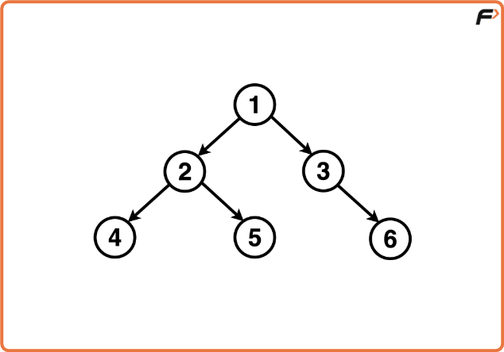
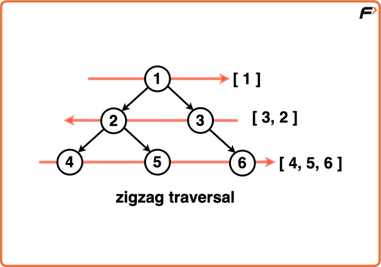
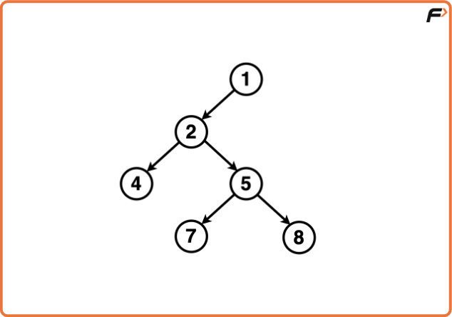
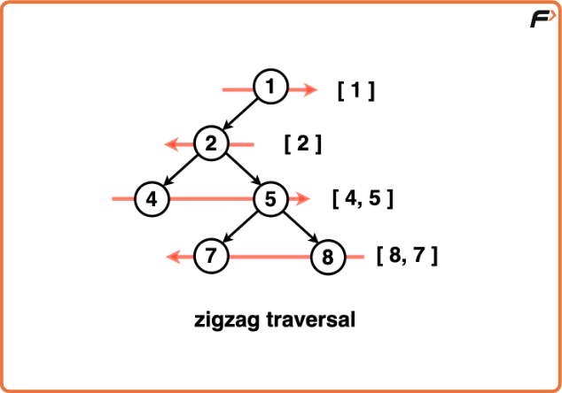
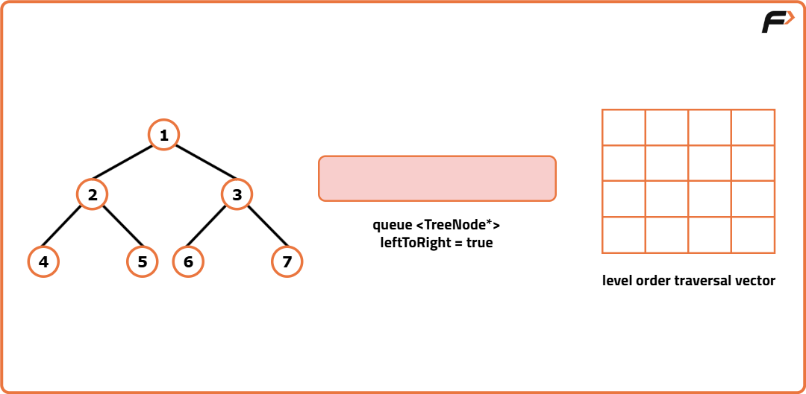
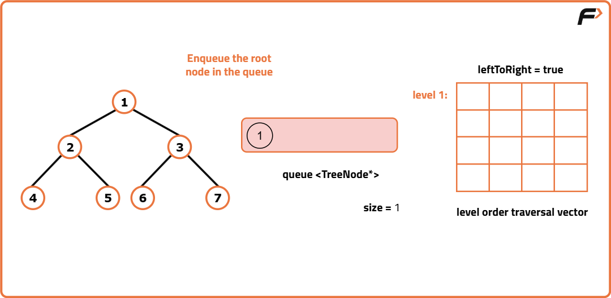
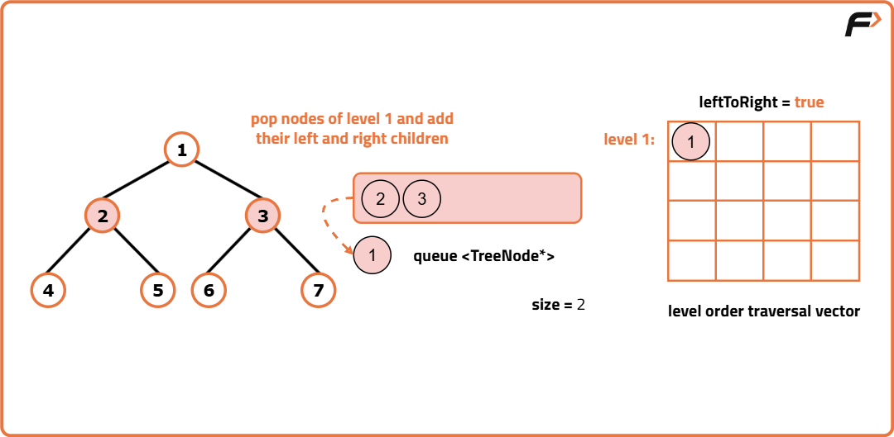
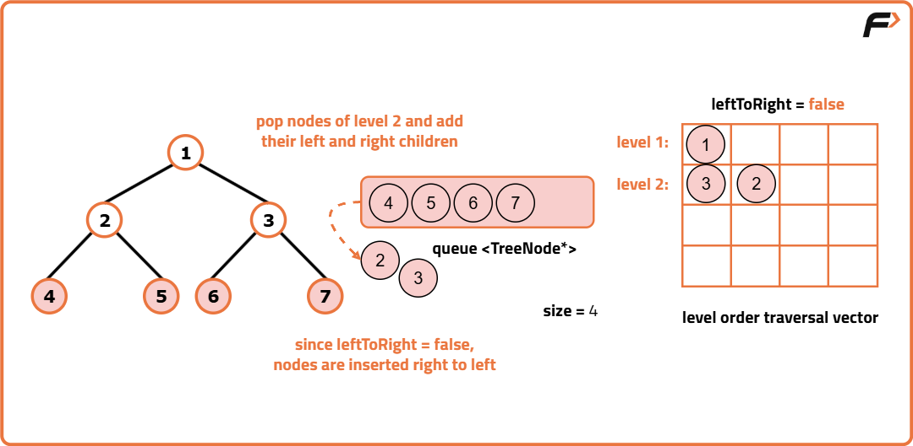
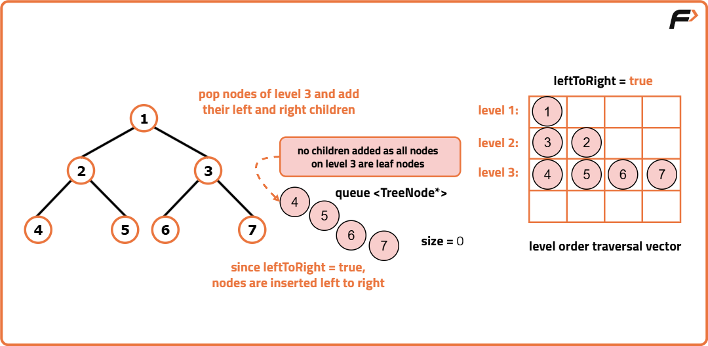

Zig Zag Traversal Of Binary Tree
Problem Statement: Given a Binary Tree, print the zigzag traversal of the Binary Tree. Zigzag traversal of a binary tree is a way of visiting the nodes of the tree in a zigzag pattern, alternating between left-to-right and right-to-left at each level.
Examples
Input:Binary Tree: 1 2 3 4 5 -1 6

Output: [[1],[3, 2],[4, 5, 6]] Explanation:
- Level 1 (Root): Visit the root node 1 from left to right. Zigzag Traversal: [1]
- Level 2: Visit nodes at this level in a right-to-left order. Zigzag Traversal: [1], [3, 2]
- Level 3: Visit nodes at this level in a left-to-right order. Zigzag Traversal: [1], [3, 2], [4, 5, 6]

Input:Binary Tree: 1 2 -1 4 5 -1 -1 7 8
Output : [[1], [2], [4, 5], [8, 7]] Explanation:
- Level 1 (Root): Visit the root node 1 from left to right. Zigzag Traversal: [1]
- Level 2: Visit nodes at this level in a right-to-left order. Zigzag Traversal: [1], [2]
- Level 3: Visit nodes at this level in a left-to-right order. Zigzag Traversal: [1], [3, 2], [4, 5]
- Level 4: Visit nodes at this level in a right-to-left order. Zigzag Traversal: [1], [3, 2], [4, 5], [8, 7]

Disclaimer: Don’t jump directly to the solution, try it out yourself first.
Approach
Algorithm
Zigzag traversal is a modification of the traditional level order traversal in a binary tree.
Level Order Traversal explores does at each level from left or right but zigzag traversal adds a twist by alternating the direction of exploration.
At odd levels, we proceed from left to right but for even levels the order is reversed, from right to left. This is achieved by introducing a `leftToRight` flag which controls the order in which nodes are processed at each level.
When `leftToRight` is true, nodes are inserted into the level vector from left to right and when its false, nodes are inserted right to left.
- Initialise an empty queue data structure to store the nodes during traversal. Create a 2D array or a vector of a vector to store the level order traversal. If the tree is empty, return this empty 2D vector.
- Create a `leftToRight` flag to keep track of the direction of traversal. When `leftToRight` is true, nodes are inserted into the level vector from left to right and when its false, nodes are inserted right to left.
- Enqueue the root node ie. Add the root node of the binary tree to the queue.
- Iterate until the queue is empty:
- Get the current size of the queue. This size indicates the number of nodes at the current level.
- Create a vector ‘level’ to store the nodes at the current level.
- Iterate through ‘size’ number of nodes at the current level:
- Pop the front node from the queue.
- Store the node’s value in the level vector. Determine the index to insert the node’s value based on the traversal direction ‘leftToRight’.
- If ‘leftToRight’ is true, the index is set to ‘i’ which means the node’s value will be inserted form left to right.
- If ‘rightToLeft’ is false, the index is set to size - 1 - i, meaning the node’s value will be inserted from right to left
- Enqueue the left and right child nodes of the current node (if they exist) into the queue.
- After processing all the nodes at the current level, add the ‘level’ vector to the ‘ans’ 2D vector, representing the current level.
- Reverse the direction of traversal for the next level by updating the ‘leftToRight’ flag to its opposite value. This toggling ensures that the nodes at the next level will be processed in the opposite direction, alternating between left-to-right and right-to-left.
- Once the traversal loop completes ie. all levels have been processed, return the ‘ans’ 2D vector containing the level-order traversal.





Code
#include <bits/stdc++.h>
using namespace std;
// Structure to represent a binary tree node
struct TreeNode {
int val; // Value of the node
TreeNode* left; // Pointer to left child
TreeNode* right; // Pointer to right child
// Constructor to initialize node with a given value
TreeNode(int x) : val(x), left(nullptr), right(nullptr) {}
};
class Solution {
public:
// Function to perform zigzag (spiral) level order traversal of a binary tree
vector<vector<int>> zigzagLevelOrder(TreeNode* root) {
// Vector to store the final zigzag traversal result
vector<vector<int>> result;
// If the tree is empty, return an empty result
if (!root) return result;
// Queue to store nodes level by level (BFS)
queue<TreeNode*> q;
q.push(root);
// Boolean flag to control traversal direction: true for left-to-right, false for right-to-left
bool leftToRight = true;
// Loop until all levels are processed
while (!q.empty()) {
// Get the number of nodes at the current level
int size = q.size();
// Temporary vector to store the current level's values in correct zigzag order
vector<int> level(size);
// Process each node in the current level
for (int i = 0; i < size; i++) {
// Get the front node from the queue
TreeNode* node = q.front();
q.pop();
// Determine index where this node's value should be placed based on traversal direction
int index = leftToRight ? i : size - 1 - i;
level[index] = node->val;
// If left child exists, add it to the queue
if (node->left) q.push(node->left);
// If right child exists, add it to the queue
if (node->right) q.push(node->right);
}
// After finishing this level, toggle the direction for the next level
leftToRight = !leftToRight;
// Add this level's data to the final result
result.push_back(level);
}
// Return the zigzag traversal result
return result;
}
};
int main() {
// Create binary tree:
// 1
// / \
// 2 3
// / \ \
// 4 5 6
TreeNode* root = new TreeNode(1);
root->left = new TreeNode(2);
root->right = new TreeNode(3);
root->left->left = new TreeNode(4);
root->left->right = new TreeNode(5);
root->right->right = new TreeNode(6);
// Create Solution object
Solution sol;
// Get zigzag traversal result
vector<vector<int>> ans = sol.zigzagLevelOrder(root);
// Print result in desired format
cout << "[";
for (auto &level : ans) {
cout << "[";
for (int i = 0; i < level.size(); i++) {
cout << level[i];
if (i != level.size() - 1) cout << ", ";
}
cout << "]";
}
cout << "]" << endl;
return 0;
}
Complexity Analysis
Time Complexity: O(N) where N is the number of nodes in the binary tree. Each node of the binary tree is enqueued and dequeued exactly once, hence all nodes need to be processed and visited. Processing each node takes constant time operations which contributes to the overall linear time complexity.
Space Complexity: O(N) where N is the number of nodes in the binary tree. In the worst case, the queue has to hold all the nodes of the last level of the binary tree, the last level could at most hold N/2 nodes hence the space complexity of the queue is proportional to O(N). The resultant vector answer also stores the values of the nodes level by level and hence contains all the nodes of the tree contributing to O(N) space as well.